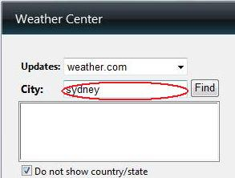
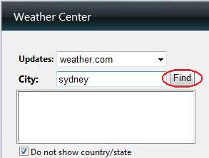

How to change days in forecast?
1.
Type your city name

2.
Press “Find” button

3.
Click on your city from the list
4.
Press OK

How to change days in forecast
Move mouse over gadget and find panel.
Press arrows to add/reduce number of forecast days.